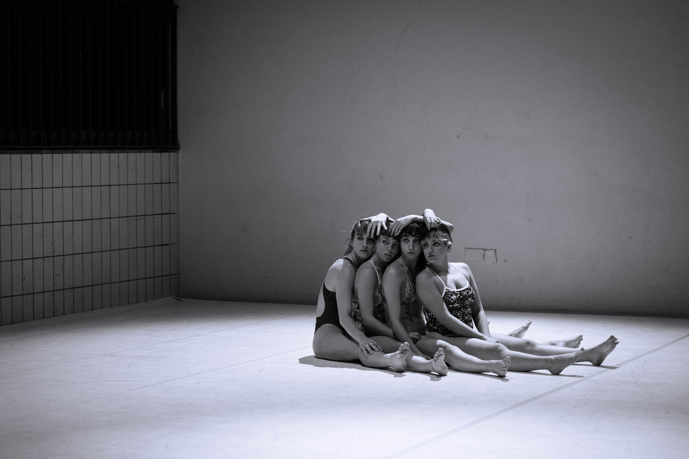

Kedos

Kedos (κήδος) is an ancient Greek word used to describe care, but also worry, sorrow, the object of care, the wedding rite, and mourning. The word “κηδεία” (funeral) also refers to the burial ceremony. Across these meanings, the common ground is the act of care.
The performance focuses on four dancers who reveal their relationship with one another through different forms of care.
Credits
Idea / Concept / Co-creation: Anthie Stasinou, Annamaria Karounou, Antzy Sarigeorgiou, Panagiota Bafouni
Song: Fotios
Ufer Studios, Berlin, Germany — January 2025
PLYFA, Athens — November 2024